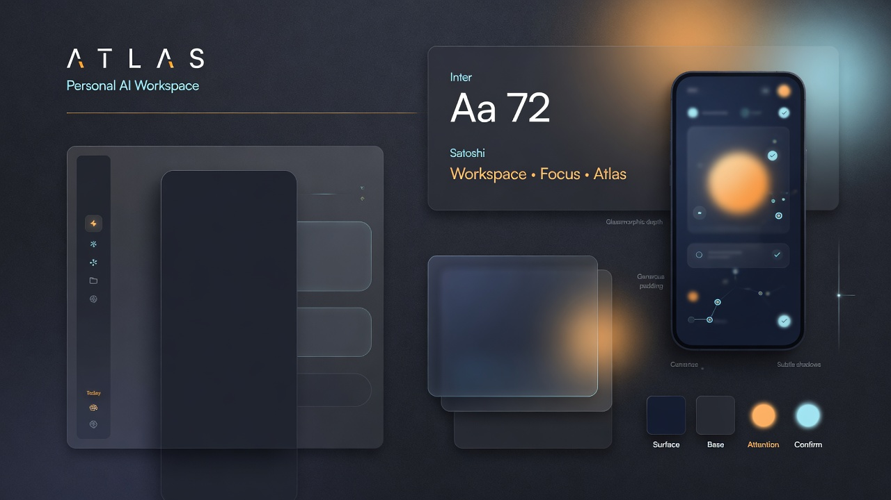

Review package — high-fidelity visuals + interactive HTML mockups.
No Companion implementation yet. Preserve API/auth/SSE/routing/DTOs only.
The face of Atlas
Personal AI workspace for daily use: desktop sidebar, strong widescreen use,
human language, visual progress and decisions, Inspect for deep runtime.
Not an admin console.

Desktop proposals
Click a card for the interactive HTML mockup (accurate structure & copy).
Android / PWA adaptation
What to approve / reject
- Direction: personal command centre vs admin harness
- Navigation: desktop sidebar + mobile bottom nav
- Language: human states only; IDs/JSON under Inspect
- Work cockpit: decision cards + timeline + artifacts before technical detail
- Chat: conversation-first with explicit Start work bridge
- Palette: ink navy, amber attention, cyan confirmation, violet authority
Interactive mockups: docs/prototypes/companion-v2-redesign/
· local gallery: http://127.0.0.1:8767/